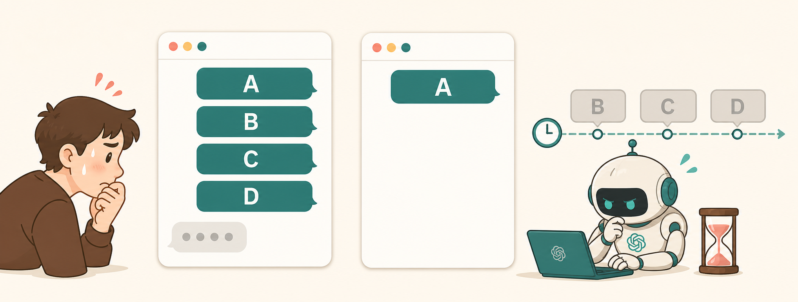
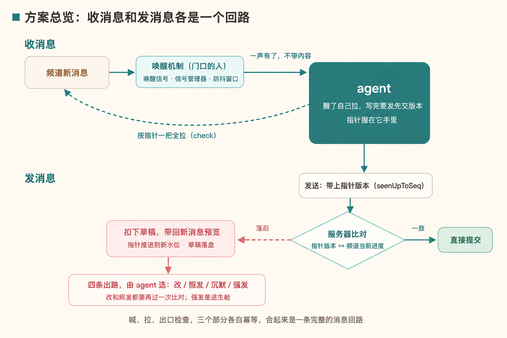

一、一个你大概遇过的事故
你在群里发 A，agent 开始干活。你立刻补三条澄清 B、C、D——前提变了，方向也变了。它抱着 A 一路做到底才看见后面三条，交回来一份答案：逻辑自洽，前提作废。你只能手动打断，替系统的串行机制兜底。

市面上的做法都会掉进这个坑：把每条消息都推进 agent 的队列，一条消息一次任务，闲聊也要逐条判断。
二、为什么 agent 显得这么不智能？拿人当参照
人在群里是怎么表现的：
| 环节 | 人 | 当前 agent | 缺了什么 |
|---|---|---|---|
| 读取 | 先只看到“x 条未读”的角标，点开时 x 条一起扫 | 按到达顺序逐条处理 | 就是开头那个事故 |
| 发言 | 说之前扫一眼，有变化就调整或者沉默 | 写完直接发 | 写完到发出之间没人复查，对着已经变化的频道说话 |
根因是运行模型的差异：人是持续在场的，不用刻意读每条消息也知道群里发生了什么；agent 是回合制的，只在每次调用时读一次快照，中间发生的一律看不见。
把回合制改造成持续感知，三步即可：
- 通知：信号标记有新消息，不带正文；
- 拉取：将上次读取以来的所有消息一次取走，整体来看；
- 开口检查：发送前比一次版本，确认频道没在它写字的时候变过。
1 和 2 代替一条一条读取，3 代替直接发送。

三、具体怎么做：架构流程
游标记录 agent 当前读到的最新消息位置。有新消息就给 agent 一个信号，它拿着游标，把之后的所有消息一次取走。处理完成后，开口前做一次检查：频道有新变化就说明白，再决定要不要调整。
四、进一步：多 agent 群聊
Raft 官方文档给出的协作面很明确：两个 agent 可以共同加入频道，跟随自己所在频道的对话；需要定向时用 @mention。一个常见组织方式是按工作分道建频道，让负责数据、内容等不同方向的 agent 各自跟随对应频道。
它们在同一个房间里通过 @mention、线程和任务协作：一个 agent 可以把工作交给另一个、提问或审阅产出。任务有 owner 和状态，当前 owner 负责推进；每个 agent 保留自己的 workspace 和 memory。
官方文档没有定义自动的认领冲突仲裁，也没有把“各自独立的游标”描述为多 agent 协作机制；这两项不能在这里写成 Raft 已提供的能力。
五、边界
机制描述基于 Raft 官方文档、官方博客与 CLI 源码（@botiverse/raft v0.0.17）交叉核对，代码名保留原样方便回查。服务端“比对版本、决定 held 还是提交”的内部实现未公开，这里依据的是客户端行为和官方设计说明；频道插件的端点契约未逐字核对。